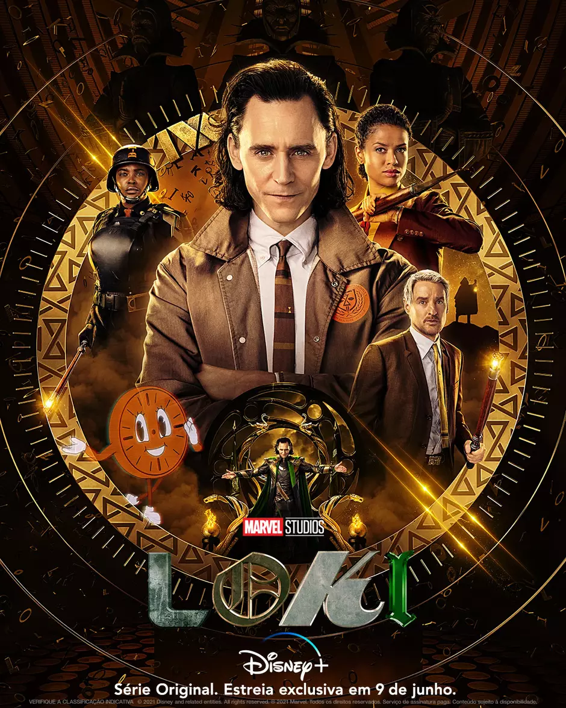
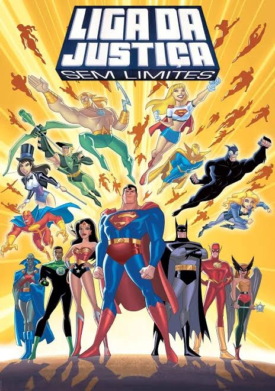

Suits

Trailer:
"Suits" é uma série dramática que acompanha a jornada de Mike Ross, um jovem brilhante que, apesar de ter abandonado a faculdade de direito, é contratado como associado por Harvey Specter, um dos melhores advogados de Nova York. A trama se centra na dupla, que tenta manter o segredo de Mike sobre não ter diploma de direito, enquanto lidam com casos complexos e intrincados no escritório de advocacia Pearson Hardman.
Loki
Trailer:
A série "Loki" acompanha Loki (Tom Hiddleston), o Deus da Trapaça, depois de roubar o Tesseract durante os eventos de "Vingadores: Ultimato". Ele é então preso pela Autoridade de Variância Temporal (AVT), uma organização que monitora a linha do tempo, e obrigado a trabalhar para corrigir as anomalias que causou.
Liga da Justiça sem limites
"Liga da Justiça Sem Limites" é uma série animada que expande a história da Liga da Justiça, com os heróis originais enfrentando novas ameaças e recrutando novos aliados para defender a Terra e o universo de forças do mal. A série se passa em um mundo com invasões extraterrestres, feiticeiros poderosos e deuses antigos, com a Liga da Justiça lutando contra vilões e tramas criminosas que colocam o universo em perigo.